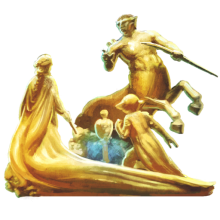
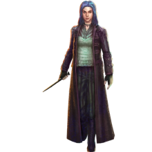

Page 1: Ministry Atrium
Ministry Official
The Ministry of Magic serves as the primary governing body within the United Kingdom. Ministers work for the Ministry doing all sorts of crucial jobs, from law enforcement to research and education to traditional governance.
Return to: Ministry Official's Cubicle
Flock of Interdepartmental Memos
Communication across all department of the British Ministry of Magic is facilitated by Interdepartmental Memos: pruple self-propelled paper aeroplanes. The previous communication solution - owls - were replaced after realizing the mess made from their droppings.
Return to: British Ministry of Magic Atrium
Daily Prophet Stand
The Daily Prophet is the only official wizarding news outlet in Britain, and its two editions are delivered daily to witches and wizards via owl. Closely linked to the British Ministry of Magic, some claim the paper shows an occasional bias.
Return to: British Ministry of Magic Atrium
Ministry Administrator
The Ministry of Magic has hundreds of employees in varying capacities, but an overarching priority for every member is the enforcement of the Statute of Secrecy. Signed in 1692, the statute has successfully kept the magical and Muggle worlds separate.
Return to: Ministry of Magic Portkey Office
Prophecy Record
These orbs are a means of keeping a record of prophecies made by Seers, kept within the Department of Mysteries at the Ministry of Magic. An orb can only be found and collected by the person who is the subject of the prophecy itself.
Return to: Ministry of Magic Department of Mysteries, 1996
Page 2: Ministry Atrium II
The Veil
A portal between the world of the living and the dead, the Veil resides within the Death Chamber inside the Ministry of Magic's secretive Department of Mysteries. Once one crosses the threshold into the Veil, there is no return.
Return to: Ministry of Magic Department of Mysteries
Tank of Brains
The Tank of Brains is located within the Department of Mysteries at the British Ministry of Magic. When disturbed, the brains within the tank are capable of emitting dangerous tendrils of thought which are powerful enough to suffocate a human.
Return to: Ministry of Magic Department of Mysteries
Fountain of Magical Brethren
This fountain features five golden statues representing a wizard, witch, goblin, centaur, and house-elf. Located in the atrium of the Ministry of Magic, it depicts the bond between all magical beings and beasts.
Return to: British Ministry of Magic Atrium

Bogrod
Goblins are proud magical beings that are known for their work with metals, particularly silver. They believe that an object's true owner is the one who makes it, not who purchases it. Gringotts Wizarding Bank is run by Goblins.
Return to: Gringotts Bank
Page 3: Courtroom Ten
Mad-Eye Moody
One of the greatest Aurors to ever live, Alastor “Mad-Eye” Moody was responsible for apprehending a considerable number of Dark Wizards at great cost to himself - losing a leg, a part of his nose and (most famously) an eye in the process.
Return to: Ministry of Magic Auror Headquarters, 1995
Nymphadora Tonks
A skilled but clumsy Auror, Nymphadora Tonks was known for being a Metamorphmagus - having the ability to change some of her physical features at will. Tonks was tragically killed at the Battle of Hogwarts alongside her husband, Remus Lupin.
Return to: Ministry of Magic Auror Headquarters, 1995

Arthur Weasley
The head of the Weasley household, Arthur Weasley has an immense fascination with Muggles and how they manage their daily lives without magic. During the Second Wizarding War, Arthur joined the Order of the Phoenix and fought at the Battle of Hogwarts.
Return to: Misuse of Muggle Artefacts Office, 1992
Ministry Visitor's Entrance
The Visitor's Entrance to the British Ministry of Magic is accessed through a worn phone box located on an unremarkable London street. To access the Ministry, one must dial 62442 inside the booth.
Return to: British Ministry of Magic
Wizengamot Accusation Chair
Part of the Wizengamot's function is to act as high court for the British Wizarding community. The accusation chair binds the accused to its seat during trial using unbreakable magical chains.
Return to: Courtroom Ten, British Ministry of Magic